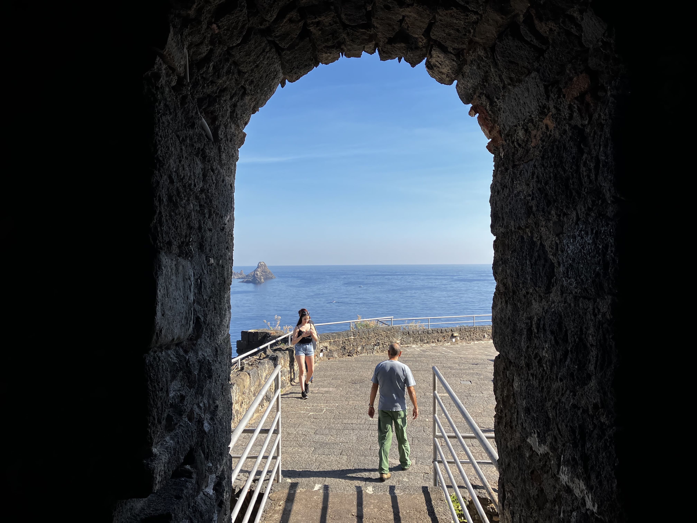
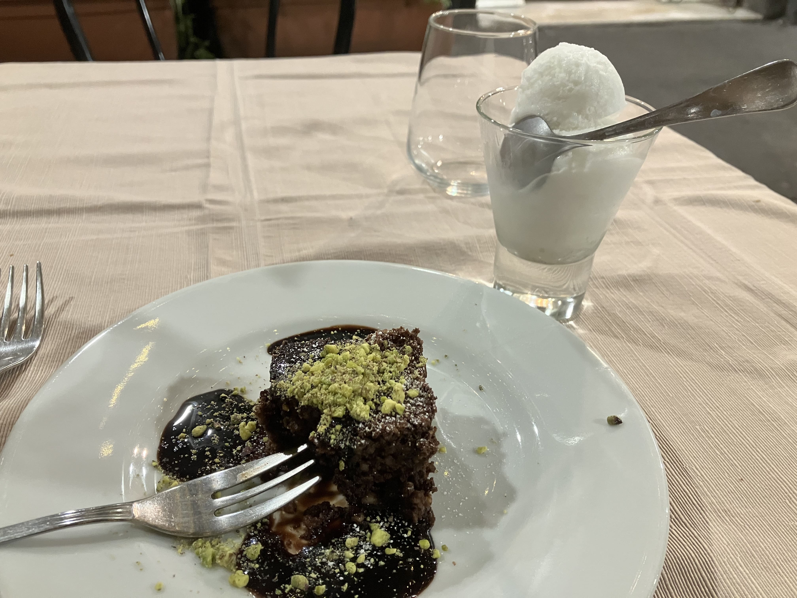
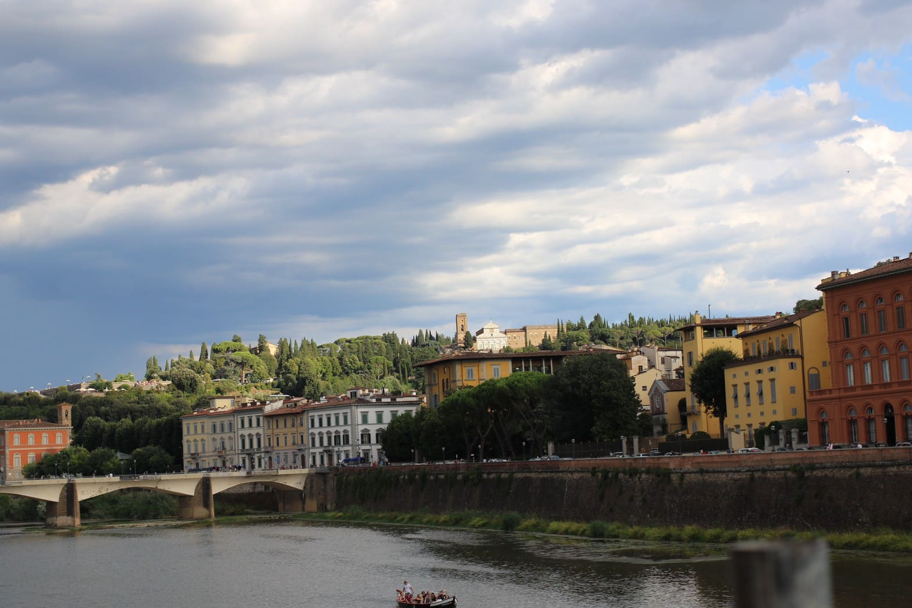

基本情報Information
シチリア島の基本情報
シチリア島は自然豊かで美しい町並みが魅力的です。海に囲まれていて太陽燦々気持ちの良い町というイメージの通り、同じイタリアでもローマやミラノなどとは時間の流れまで違うように感じられます。
グルメ
シチリアには魅力的な食材が溢れています。 山の幸と海の幸に恵まれ、レモン、オリーブ、オレンジ、アーモンド、チーズ類、ワインなど多くの名産品があります。そのため、旅の道すがら食事を楽しめるのも魅力です。
アクセス
いずれも日本からの直行便はありませんが、ローマ、ミラノまたはヨーロッパ各地からの乗継で同日での到着が可能です。
